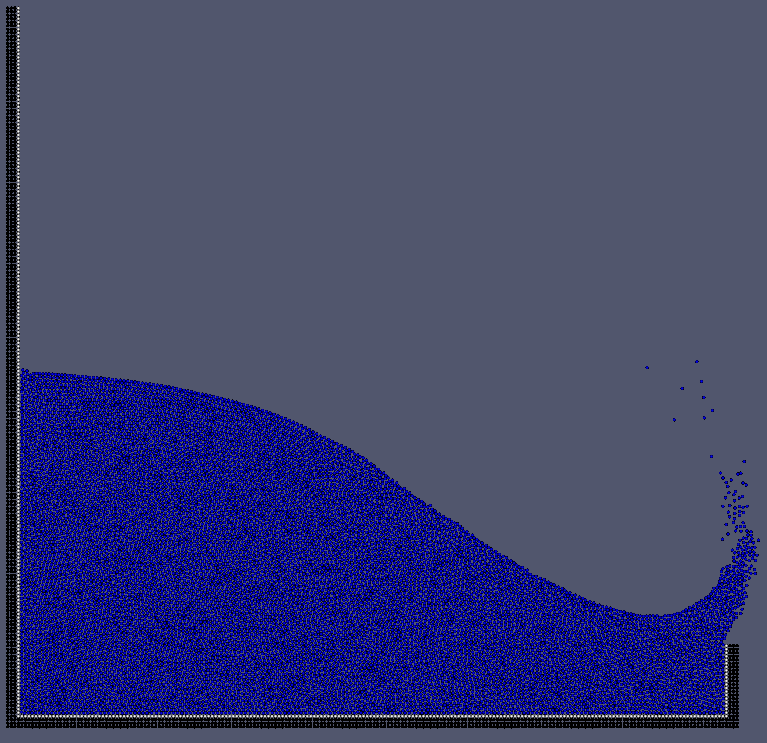

OpenMPS's page
This is the root web page about OpenMPS.
OpenMPS is an open-source implemention of Moving Particle Semi-implicit (MPS) method. MPS method is one of the most popular Particle Method to solve Continuum Dynamics (e.g. Fluid Dynamics). See Wikipedia for more information.
